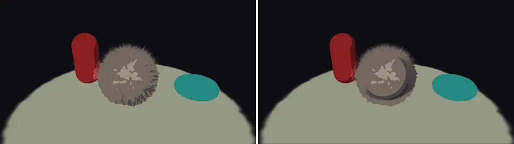
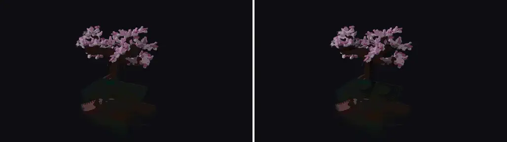
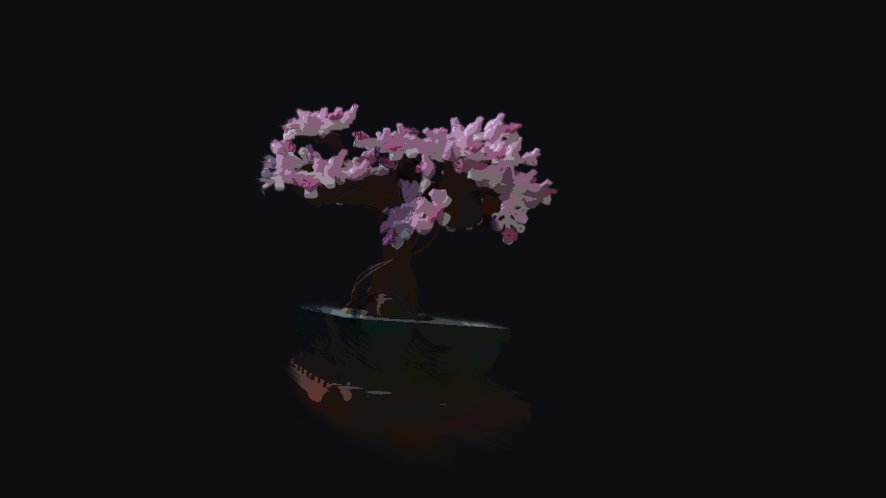
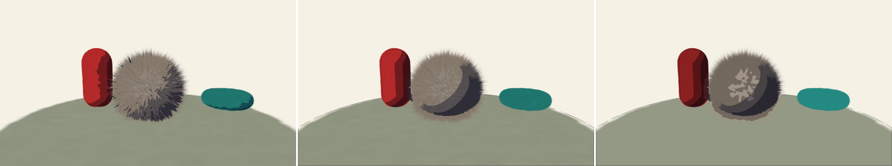
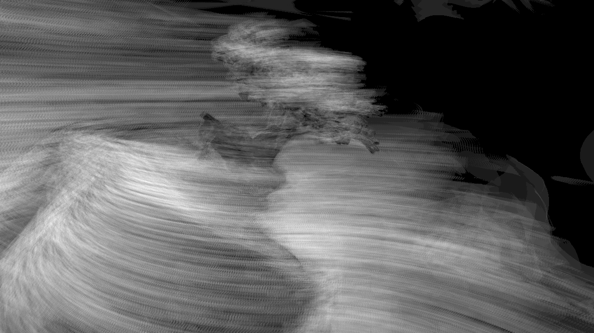
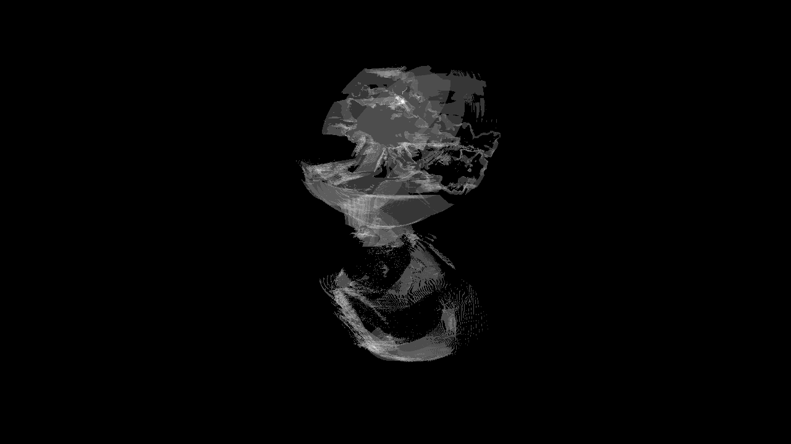

/ lab
写真から作った 3D をアニメ塗りにする
写真群から再構成した 3D (Gaussian Splatting) に、アニメ調の陰影（はっきりした明暗の帯・ベタ塗り・輪郭線）を安定して乗せる実験です。
Gaussian Splatting は「半透明の粒」を何十万個も重ねて本物そっくりの 3D を作る手法ですが、粒の向き (法線) はノイズだらけで、そのままアニメ調の陰影を計算すると帯がガタつき、カメラを動かすと画面全体がちらつきます。この実験では陰影を決める形を、見た目の粒とは別に持つことでこれを解き、ちらつきを数値でも比較しました。
作ったもの
下は粒で作ったテストシーン (毛の生えた球・柱・床・輪) に光を一周させた比較です。 左が素朴なやり方 (粒の向きをそのまま使う)、右がこの実験の方式。 左は陰影の帯が崩れてまだらに明滅し、右は帯が形に沿って静かに掃いていきます。

写真から再構成した実データでも動きます。下は研究でよく使われる盆栽の撮影データ (MipNeRF360) を切り出してアニメ塗りにしたもの。


何が難しいか
アニメ調の陰影は「明るい / 影」を段差で塗り分けます。段差はわずかな向きの違いを白黒の反転に増幅するので、 粒の向きがノイズだらけの Gaussian Splatting とは根本的に相性が悪い。粒ごとに塗り分けてから重ねると、 今度は半透明の混ざり合いで段差そのものが溶けて消えます。ゲームのアニメ調 3D が顔の法線を手作業で編集したり 専用の影テクスチャを描いたりするのは、この増幅と戦うためです。写真から自動で作られる再構成データには、 その手作業の入り口がありません。

仕組み：陰影を決める形を分離する
粒の集まりを一度 3D の格子に写して大きくぼかし、物体を包む滑らかな面を作ります。 陰影の帯はこの面の向きから画素ごとに計算し、色は元の粒から取る。つまり 「見た目は元の粒のまま、陰影だけ滑らかな分身が担当する」という分業です。 ぼかしの強さがそのまま「陰影の形をどこまで単純化するか」の調整つまみになります。 仕上げに、色のまだらを均すベタ塗り化、面の切れ目から引く輪郭線、撮影時に写り込んだ照明を割り戻す補正を重ねています。
必要なら球やカプセルを手で置いて、その部分だけ陰影の形を差し替えることもできます (ゲームが顔だけ専用の影を持つのと同じ役割分担)。
ちらつきを数値で分ける
「帯が安定した」を目視で終わらせないため、カメラを一定速度で回しながら 陰影の帯が反転した画素の割合を毎フレーム数えました。さらに回転速度を半分にしてもう一度計測すると、 光と形の関係で正しく動いた分は半分になり、ノイズによるちらつきはそのまま残る。この差から ちらつきの成分だけを取り出せます。実データ (盆栽) では、素朴なやり方のちらつき成分が 2.1% / フレームなのに対し、 本方式は 0.19% でした (約 11 分の 1)。


学びと限界
帯の安定という目的は数値で達成できた一方、「アニメのイラストに見えるか」には距離が残りました。 拾ってきた撮影データは色に照明が焼き付いていて、割り戻し補正では取り切れません。 出力は「アニメ絵」というより「陰影処理を通した写真」に留まり、その先はアルゴリズムよりも 被写体選びと絵作りの領域だと分かったのが、この実験の一番の収穫です。 ちらつきを速度の違う 2 回の計測で分解する評価方法は、他のスタイル描画の検証にもそのまま使えます。